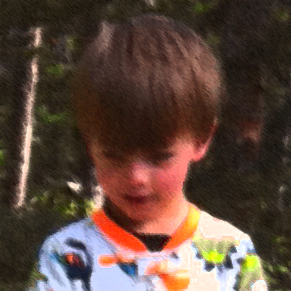
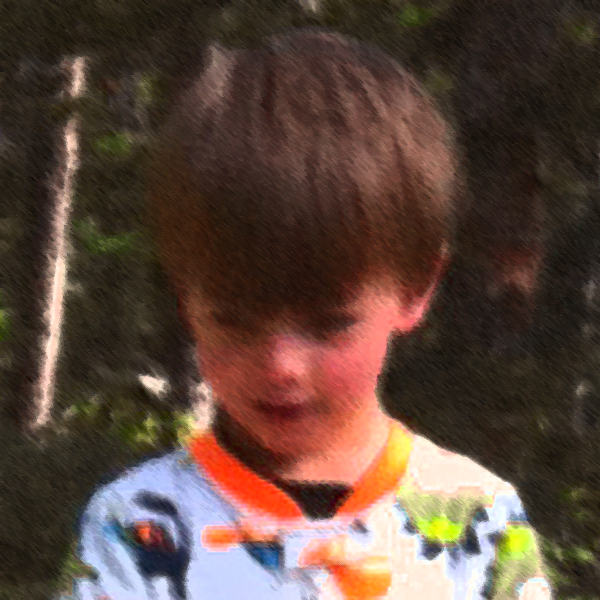
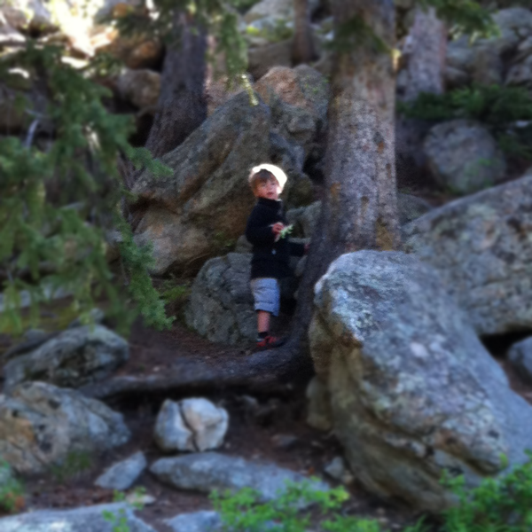
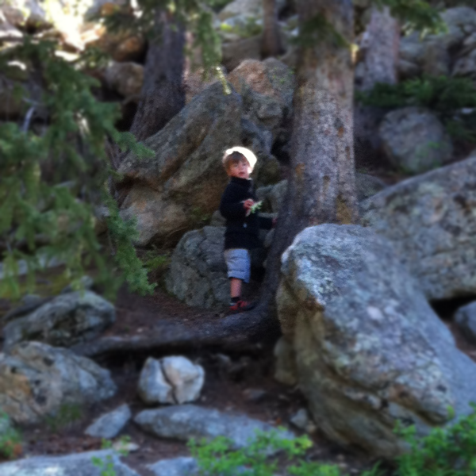
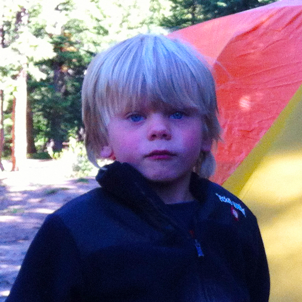
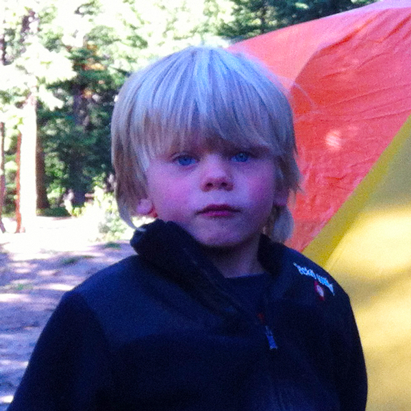
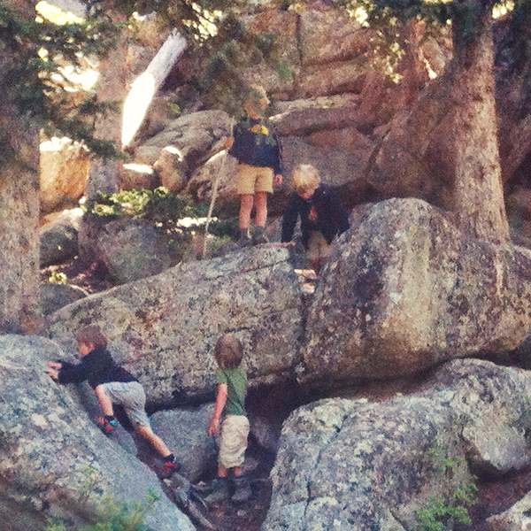
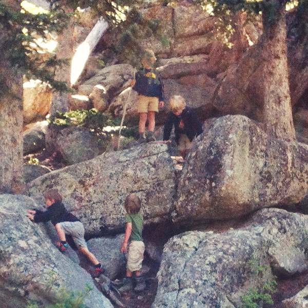

Get Towed in.
Even Laird needs friends.
You've heard of laird hamilton, Right? The surfer who looks for 100' waves. The guy is a monster machine. But you know what? He's not fast enough to catch those waves on his own. He needs someone on a jetski to tow him into the wave. Macho Laird needs someone in order that he can fulfill his passion.
You cannot get any more macho than Laird Hamilton. Yet, even he needs help. The waves Laird often surfs require the speed that requires assistance from a jet ski.

Laird hamilton lives his passion because he asks for help.
Laird's passion is a difficutl one for him.
If you ask a guy in his 30's who his good friends, he'll likely name his college buddy, or similar friend from a past era. Why don't guys mention anyone from the present?
Reasons guys don't have friends
We no likey chit chat.
Life is so busy that I have little time outside of work, family, and chores. If they have a passion, they want to spend that precious time doing that passion. Given the choice, Guys would rather spend their time solo on their passion, than chit chat with guys who don't have anything interesting to talk about. I have trouble with prolonged chit-chat. When we have a community outing, I am thinking ofthe guys who will be there that I can talk about something exciting. I think this is where beer is becoming so popular, because it helps numb the dullness. People without passion are dull.
We play it safe.
Safe guys don't need help. If you are not trying something big or uncomfortable, then you won't ask for help.
What's difficult for one man is not difficult for another.
Camping is difficult for me.
Camping is hard for me to do. The planning. The equipment. The location. There are so many little details that I have never had the time or money to acquire. Camping is difficult for me, so I asked for help.
It's something that I can get excited about because it's new and different and I can follow an expert.
Jeff towed me into the wave I couldn't do on my own. In the process, we've become good friends.
To learn to camp. And Jeff had a passion to share camping. We were able to bond in such a way we've become friends.
Jeff's passion and my desire made for an awesome few meetings about the camping, and the actual event.
This is Jeff.
He's a man's man.
- Former Forrest Ranger
- Works for Boulder, County.
- Climbed all of Colorado's 14'ers
Even has the cousy to prove it.
Tip 2: Share your passion.
I love to program. I'm more than happy to help and talk with anyone who wants to learn. On the very rare occasion someone does ask, I break my routine and help them. Why? Because it's a passion of mine. I get a thrill in seeing people migrate to Internetland. If you can't believe passion is self-gratifying, then consider it my calling.
Men who have passions, glady share them. Point one (time strapped) means that even passionate dads don't get to do what they love as often as they like.
So, when Jeff Mr camping hears I need help, he gladly offers it. Jeff was more than happy to share camping with me. So, it was a safe ask for me to ask him about camping.
What is your passion?
But, this brings up a good point. If you want to ask, then you have to possess a passion for something.
A sub-point to this post is that Most dads don't have a wave, a passion, to ask for help about. Let me be more blunt;
- What are you doing about it?
- What do you want to be?
- Who can you ask help for?
- If you don't know, what are you doing to find those people?
Moral
Guys with passion will share it - in conversation and action.
Action item - Ask "What are you passionate about?"
Action item - Ask "What does it take to do that?"
Guys who want to do something need to ask for help.
Homework;
Action item - figure out what you want to do.
Action item - Find the person / group who can help you do it.
If you have a passion, offer it to your friends.
How to become friends in your 30's. (A poem.)
Step 1: I had a desire to do something difficult.
Step 2: I met Jeff.
Step 3: He shared his passion.
Step 4: We became friends.


 

 


 


 
